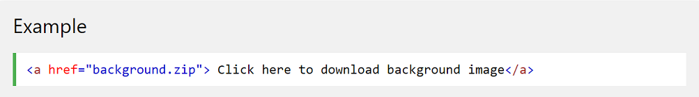

Download Links
Introduction
File links are used for allowing a visitor to download a file. These links are set up exactly the same as the local or external links. Instead of �pointing� to another page or site, it points to a file. When the user clicks on this link, the browser knows it is a file and will ask the visitor if they want to download the file.
The types of files available to be used for download depends on your online server.
You can get the file URL by uploading ur file to any uploading site and they will give you the URL for your file.
Syntax
<a href="full_address_of_file">Click here to Download </a>

<< go back